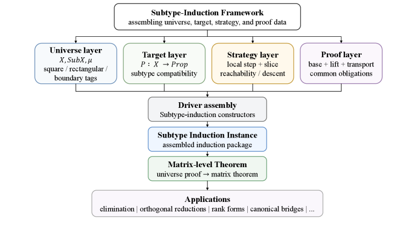

A Lean 4 framework abstracts the recursive proof pattern shared by many matrix decompositions into reusable schema, transport, and subtype-induction machinery.
Abstract
Existence proofs for many matrix decompositions share a recursive routine: a local transformation prepares the matrix, a slice is selected, a recursive solution is obtained, and the result is lifted and transported back. Formalizing this routine uniformly in dependent type theory is difficult because recursive subproblems may change index types, and reconstruction must preserve structural predicates across block embeddings and reindexings. We develop a Lean 4 framework that separates decomposition schemas, transformations, reduction strategies, measures, lifting, transport, and subtype induction. The framework uses general index types, packages square and rectangular matrices in universe types, and provides a decomposition driver that assembles strategy data into subtype-induction instances. It has been instantiated across PLU, LU, LDL/Cholesky, QR variants, Gauss rank normal form, Hessenberg reductions, Schur variants, normal spectral decomposition, SVD, bidiagonalization, tridiagonalization, UTV, Smith normal form, rational canonical form, and Jordan-type forms at varying levels of statement strength. Across these instances, repeated decomposition proofs are best treated not as separate tasks but as instances of a more general inductive statement whose interface records a certified proof path compatible with the chosen decomposition statement.
Problem
Existence proofs for many matrix decompositions share a recursive routine, but formalizing it uniformly in dependent type theory is hard because recursive subproblems change index types and reconstruction must preserve structural predicates across block embeddings and reindexings.
Approach
A Lean 4 framework separates decomposition schemas, local transformations, reduction strategies, measures, lifting, transport, and subtype induction. It introduces matrix universes packaging index types with finite/order structure to place differently indexed matrices in a common measured domain. A decomposition driver assembles universe, target, strategy, and proof data into subtype-induction instances that yield matrix-level theorems.

Figure 2: Subtype-Induction Framework . Universe, target, strategy, and proof data are assembled through the driver into a subtype-induction instance. The resulting universe proof is converted into matrix-level theorems, with applications including elimination, orthogonal reductions, rank forms, and canonical bridges
Results
The framework is instantiated across 17 decomposition families including PLU, LU, LDL/Cholesky, QR, Hessenberg, Schur, spectral, SVD, bidiagonalization, UTV, Smith normal form, rational canonical form, and Jordan forms, totaling about 37,337 lines of Lean 4 across 118 files with 1,162 proofs.